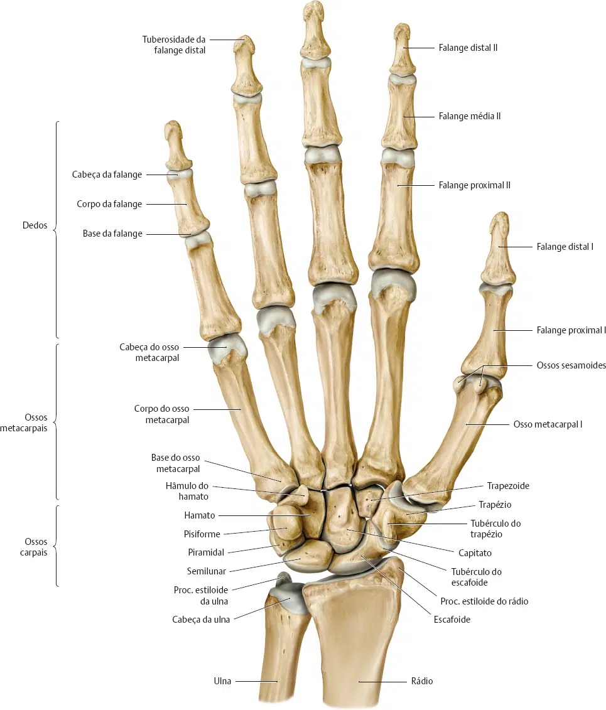
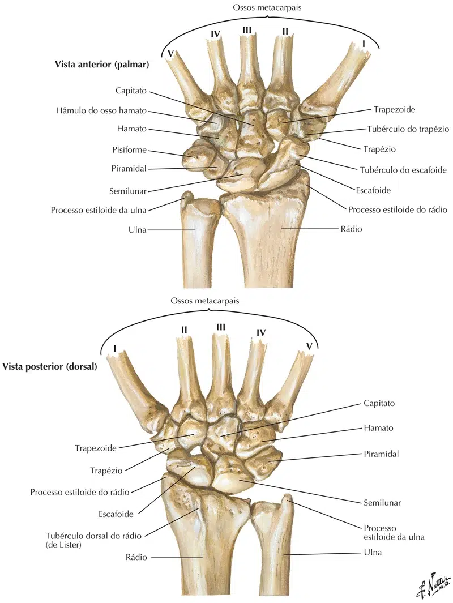
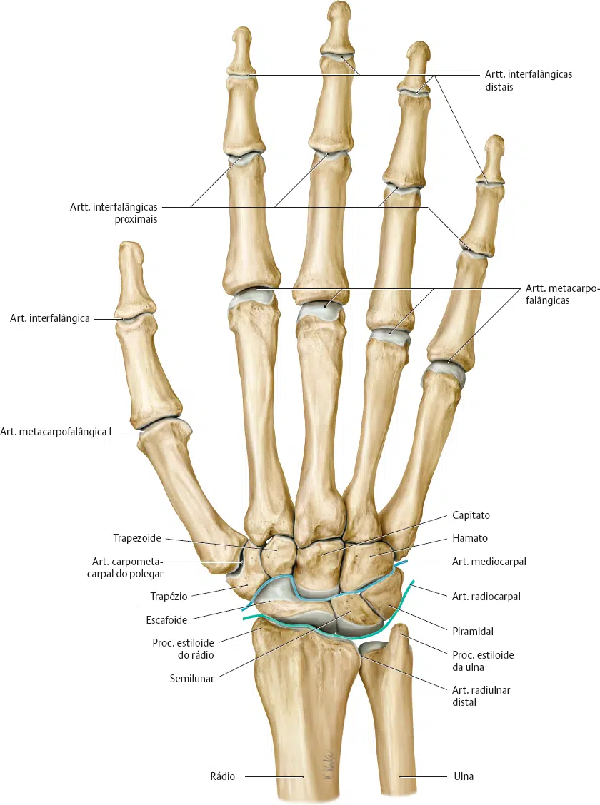

A descrição feita a seguir é um apanhado do esqueleto da mão como um todo e pressupõe, para que o estudante a acompanhe, que ele tenha à sua disposição, um esqueleto articulado deste segmento do membro superior.
Os ossos da mão podem ser divididos em três partes:
a) 08 ossos, dispostos em duas fileiras, proximal e distal, que constituem os carpos (punho);
b) O esqueleto da mão propriamente dita é formado por 05 ossos que constituem os metacarpos;
c) O esqueleto dos dedos, representado por 14 falanges, proximais, médias e distais.

Os oito ossos que o constituem estão articulados entre si e são mantidos em posição por fortes ligamentos. Dispõem-se em duas fileiras, proximal e distal.
Na fileira proximal estão:
Escafóide, semilunar, piramidal e pisiforme.
Na fileira distal estão:
Trapézio, trapezóide, capitato e hamato (ou unciforme).
A extremidade proximal do carpo é convexa, ântero-posterior e látero-medialmente, articulando-se com o rádio, enquanto que os ossos da fileira distai se articulam com os ossos do metacarpo.
Observe também que os ossos do carpo se articulam uns com os outros e que, no seu conjunto, o carpo apresenta concavidade anterior, sendo ligeiramente convexo na face posterior.


Identifique na figura abaixo os ossos do metacarpo (em cor verde), que são numerados de 1 a 5 a partir do polegar.
Os 2º, 3º, 4º e 5º podem ser considerados um conjunto.
Todos eles apresentam uma base, um corpo (ou diáfise) e uma cabeça arredondada.
As cabeças articulam-se com as falanges proximais.
As diáfises são levemente côncavas anteriormente e as bases articulam-se com os ossos da fileira distal do carpo.
Observe como ossos do metacarpo dispõem se como um leque, divergindo a partir dos ossos da fileira distal do carpo.
O 1° metacarpo tem uma diáfise mais curta e mais achatada que os outros e não se situa no plano da palma, visto que sua face anterior, alargada, está voltada medialmente.
Sua base possui uma face articular em forma de sela que se encaixa em face semelhante do trapézio.
Esta articulação em sela e a posição particular do 1° metacarpo conferem grande mobilidade ao polegar sendo importantes nos movimentos de reposição e oposição.
Cada dedo, possui falanges proximal, média e distal.
Com exceção do polegar, no qual falta a falange média.
Cada falange possui uma base, corpo e cabeça.
Todas as falanges são côncavas no sentido da palma da mão.
Observe que a falange proximal apresenta uma faceta oval, na sua base, para articular-se com a cabeça do osso metacárpico.
Por sua vez, a cabeça da falange proximal tem uma superfície articular em forma de polia (carretel) para articular-se com a base da falange média, a qual apresenta uma crista mediana que se encaixa no sulco da polia da cabeça da falange proximal.
Este mesmo tipo de encaixe pode ser identificado na articulação da falange média com a distal.
As falanges distais apresentam uma tuberosidade no lugar da cabeça.